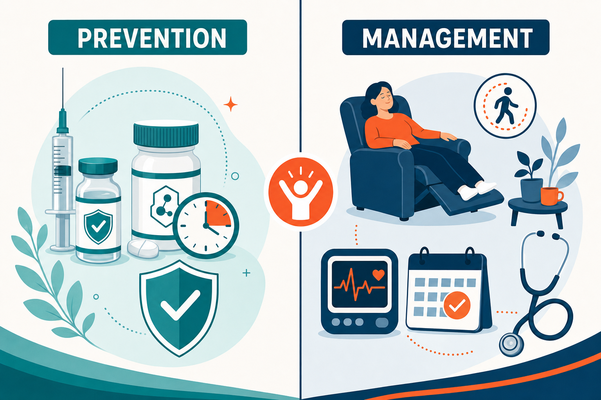

Key Takeaways
- About 8% of US adults have experienced Long COVID, and the 2024 NASEM consensus definition now requires at least 3 months of post-infection symptoms affecting one or more organ systems.[1][2]
- The RECOVER-VITAL trial published in March 2026 found that 15-day and 25-day courses of Paxlovid did not improve Long COVID symptoms versus placebo, ending a major treatment hypothesis.[3]
- Metformin shows strong PREVENTION evidence — starting it within 3 days of acute COVID reduced Long COVID risk by up to 63% — but the same drug failed when tested as a treatment in the RECOVER ENERGIZE trial.[4][5]
- There are still no FDA-approved treatments for Long COVID as of 2026. Management is symptom-targeted and multidisciplinary.[6]
- Pacing — carefully matching activity to energy capacity — is the consensus first-line management for the subset of patients with post-exertional malaise (PEM).[7]
The State of Long COVID in 2026
Four years into the pandemic, Long COVID is now recognized as a chronic condition affecting millions of people. The good news is that scientific consensus has finally coalesced on what it is and how to study it, anchored by the 2024 National Academies of Sciences, Engineering, and Medicine (NASEM) definition.[1]
The harder news is that large randomized trials in 2025 and 2026 have closed the door on several major treatment hypotheses. Long-term Paxlovid did not work. Metformin as a treatment did not work. The data tells us that what helped during acute infection does not necessarily help once Long COVID has set in.[3][5]
No drug is yet FDA-approved for Long COVID. But clearer ideas are emerging about what does help and what does not, and that is real progress for people who have been waiting for answers. This guide summarizes where the evidence stands in May 2026 and what it means if you are living with Long COVID, recovering from a recent infection, or trying to prevent one.
The 2024 NASEM Consensus Definition
After 18 months of deliberation involving more than 1,300 stakeholders — patients, clinicians, researchers, and federal agencies — the National Academies adopted the patient-coined term "Long COVID" and issued a formal definition.[1]
Long COVID is defined as "an infection-associated chronic condition (IACC) that occurs after SARS-CoV-2 infection and is present for at least 3 months as a continuous, relapsing and remitting, or progressive disease state that affects one or more organ systems."[1]
A few features of this definition matter for everyday care:
- It does not require laboratory-confirmed prior infection. Many people early in the pandemic could not get tested, and requiring proof would lock those patients out of care.
- It is not a diagnosis of exclusion. Long COVID can coexist with other conditions such as diabetes, depression, or autoimmune disease.
- The 3-month minimum gives time for normal acute recovery before applying the label.
For researchers, clinicians, and insurers, a shared definition is a quiet but important step forward. It gives everyone the same starting point.
What the 2025–2026 Trials Showed
Two large studies in early 2026 reshaped the treatment conversation. Both came from the NIH-funded RECOVER initiative, and both were rigorously designed.
RECOVER-VITAL: Long-term Paxlovid (March 2026)
This trial tested 15-day and 25-day courses of nirmatrelvir–ritonavir (Paxlovid) as a Long COVID treatment, against a 5-day control. The hypothesis was that persistent viral reservoirs might drive ongoing symptoms, and a longer antiviral course could clear them. The result, posted in late March 2026, was clear: none of the longer Paxlovid arms produced significant improvement in post-exertional malaise, cognitive dysfunction, or orthostatic intolerance compared with control.[3]
This effectively closes the door on viral persistence as the operative mechanism for most patients with established Long COVID — at least one that responds to currently available antivirals.
RECOVER ENERGIZE: Metformin as treatment (March 2026)
This arm tested 1,000 mg per day of metformin for 6 months in adults with established Long COVID. Again, the result was null: metformin did not improve Long COVID symptoms versus placebo.[5]
The metformin distinction
Here is the critical nuance. While metformin failed as a treatment, the same drug showed striking prevention effects in earlier trials. The COVID-OUT trial found a 41% lower risk of Long COVID over 10 months, and a subgroup that started metformin within 3 days of acute infection had a 63% reduction. The ACTIV-6 trial reported a similar protective effect (risk ratio 0.50).[4]
In other words, the prevention evidence is strong; the treatment evidence is null. The window for metformin appears to be during acute infection, not after Long COVID has developed.

Prevention: What Actually Works
COVID-19 vaccination remains the best-supported way to prevent Long COVID. The CDC continues to describe it as "the best available tool to prevent Long COVID," based on data from both adults and children.[2] Protection is not absolute, but it is meaningful and reproducible across studies.
Metformin within 3 days of acute infection reduced Long COVID incidence by 63% in the COVID-OUT subgroup analysis and 41% in the main 10-month analysis. The same effect was replicated in ACTIV-6. Metformin is not FDA-approved for this indication, but the prevention data from two large randomized trials is unusually consistent.[4]
Antiviral treatment of acute COVID — Paxlovid for higher-risk patients — has mixed data on subsequent Long COVID prevention, though the cardiovascular and hospitalization benefits during acute illness are well-established.
Avoiding reinfection matters. Each new SARS-CoV-2 infection carries a renewed risk of Long COVID. Sensible measures during local surges — masking in high-risk settings, ventilation, staying current on boosters — reduce that cumulative risk.
Management: A Symptom-Targeted Approach
With no FDA-approved drug for Long COVID itself, management focuses on the dominant symptoms. The approach is multidisciplinary and, increasingly, individualized to symptom phenotype.
Pacing for patients with post-exertional malaise (PEM)
About 1 in 20 people who had COVID-19 meet criteria for ME/CFS within 6 months. For this subgroup, exercise can trigger PEM crashes that set recovery back days or weeks. Pacing — matching activity to your current energy capacity and stopping before exhaustion — is the consensus first-line approach.[7]
Graded exercise for patients without PEM
A 2025 systematic review found that exercise therapy improved lung function, physical activity status, and emotional wellbeing in Long COVID patients without PEM.[8] The critical caveat is that exercise must be carefully titrated and stopped if symptoms worsen. Pushing through PEM in the wrong patient is harmful.
POTS and autonomic dysfunction
For post-COVID postural orthostatic tachycardia syndrome (POTS), beta-blockers, midodrine, ivabradine, and increased salt and fluid intake have supporting evidence. Tilt-table testing helps confirm the diagnosis in symptomatic patients.
Brain fog
Cognitive rehabilitation, ergonomic adaptation of work and home tasks, and pacing of mental effort are the current mainstays. There is no effective medication yet.
Sleep, mental health, and pain
Standard-of-care medications used off-label — sleep aids, antidepressants, analgesics — remain part of supportive care when indicated.
| Intervention | Goal | What 2025–2026 Evidence Shows | Practical Status |
|---|---|---|---|
| COVID-19 vaccination | Prevent Long COVID | Most well-supported evidence; CDC primary recommendation[2] | Widely available |
| Metformin within 3–7 days of acute COVID | Prevent Long COVID | 41–63% risk reduction in 2 RCTs (COVID-OUT, ACTIV-6)[4] | Off-label; discuss with clinician |
| Paxlovid 15–25 day course as treatment | Treat established Long COVID | NO benefit in RECOVER-VITAL (Mar 2026)[3] | Not recommended for this use |
| Metformin as treatment | Treat established Long COVID | NO benefit in RECOVER ENERGIZE (Mar 2026)[5] | Not recommended for this use |
| Pacing for PEM-positive Long COVID | Prevent symptom crashes | Consensus first-line management[7] | Self-directed with clinician support |
| Graded exercise for non-PEM Long COVID | Improve fitness/mood | Improved lung function and mood in 2025 review[8] | Carefully titrated under supervision |
| Standard meds for POTS, sleep, pain | Symptom control | Standard-of-care evidence applied off-label | Routine clinical management |
What This Means for You
If you have COVID-19 right now
Make sure you are up to date on vaccination if you can be. Ask your clinician about antiviral therapy if you are eligible. A conversation about early metformin within 3–7 days may be worth having, given the prevention data — recognizing this is currently an off-label use.[4]
If you have established Long COVID
Long-term Paxlovid and metformin are not supported by current evidence as treatments. Symptom-targeted management is today's standard.[3][5]
Whether you choose telehealth or in-person care depends on what you need at each stage:
- Telehealth visits work well for symptom tracking, pacing coaching, medication management, mental health support, and care coordination between specialists.
- In-person care is necessary for cardiopulmonary workup, autonomic testing (such as tilt-table or QSART), physical therapy assessment, and multidisciplinary Long COVID clinics.
- Most patients benefit from a combination of both. Neither path is "better" — they answer different questions.
A referral to a specialty Long COVID clinic is reasonable if your symptoms persist beyond 6 months despite initial management.
If you suspect Long COVID
Wait at least 3 months from your acute infection before applying the label, per the NASEM definition.[1] Document your symptoms and their pattern — the relapsing or remitting course is itself diagnostic. Be cautious of "miracle cure" marketing; there are no FDA-approved Long COVID treatments in 2026, and any claim to the contrary is a red flag.[6]
Red Flags Requiring Urgent Evaluation
Most Long COVID symptoms develop over weeks and can be managed without urgency. A few signs, however, warrant urgent in-person evaluation rather than a telehealth visit:
- Severe shortness of breath, chest pain, or pre-syncope (near-fainting)
- New heart palpitations with dizziness
- Focal neurological symptoms — weakness on one side, speech changes, vision loss
- Worsening cognitive function with safety concerns (driving, work, medications)
- Severe depression or thoughts of self-harm
If any of these apply, go to an emergency department or call 911. Telehealth is the right tool for many things, but not for these.
References
- National Academies of Sciences, Engineering, and Medicine. "A Long COVID Definition: A Chronic, Systemic Disease State with Profound Consequences." 2024. nationalacademies.org
- Centers for Disease Control and Prevention. "About Long COVID." cdc.gov/long-covid
- The Sick Times. "RECOVER's first round of clinical trials are failing. Will the next phase be better?" May 12, 2026. thesicktimes.org
- "Metformin and the prevention of Long COVID (COVID-OUT and ACTIV-6 evidence)." Clinical Infectious Diseases. pmc.ncbi.nlm.nih.gov
- CIDRAP. "Metformin not effective in treating Long COVID symptoms, study finds." 2026. cidrap.umn.edu
- "Candidate treatments for Long COVID: a narrative review." Frontiers in Medicine. 2026. pmc.ncbi.nlm.nih.gov
- Nyra Health. "Pacing: a proven strategy for Long COVID recovery." nyra.health
- "Exercise therapy in post-COVID syndrome: a systematic review." Frontiers in Physiology. 2025. frontiersin.org